How to use this: compare the left/source reference and right/current HTML capture. Open “element boxes” to see component coordinates; open the JSON/Markdown atlas for exact named bounding boxes, target font sizes/rotations, and the original panel perspective transform. Source photos in reference crops are positional evidence only—the product must use illustrated replacement art in those same boxes.
01 · Welcome / onboarding
Viewport: 390×844 pt · 12 elements mapped
Source referenceCurrent HTML render
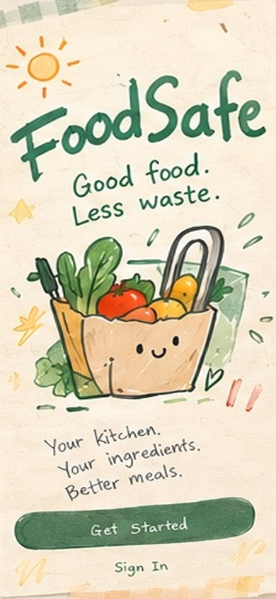
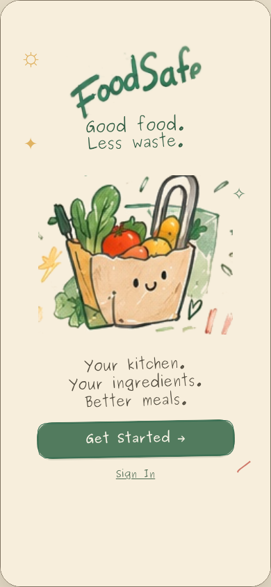
02 · My Kitchen
Viewport: 390×844 pt · 28 elements mapped
Source referenceCurrent HTML render
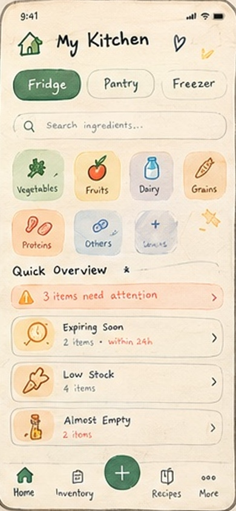
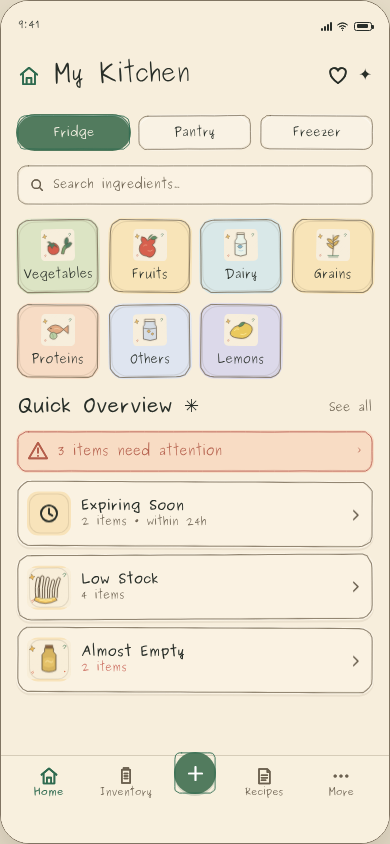
03 · Add Ingredient
Viewport: 390×844 pt · 20 elements mapped
Source referenceCurrent HTML render
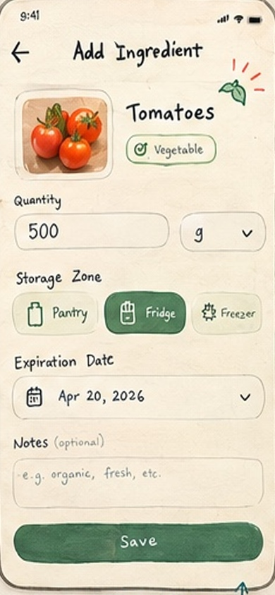
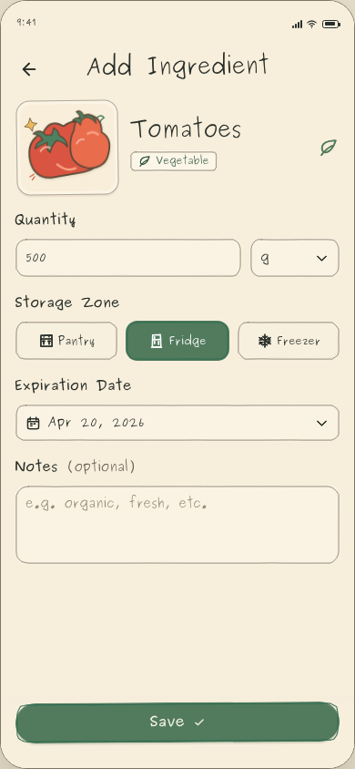
04 · Inventory
Viewport: 390×844 pt · 24 elements mapped
Source referenceCurrent HTML render
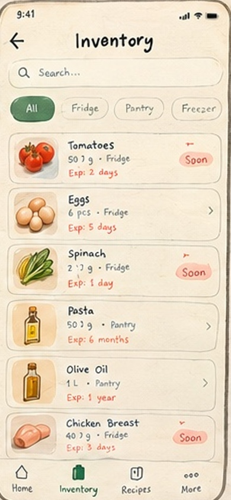
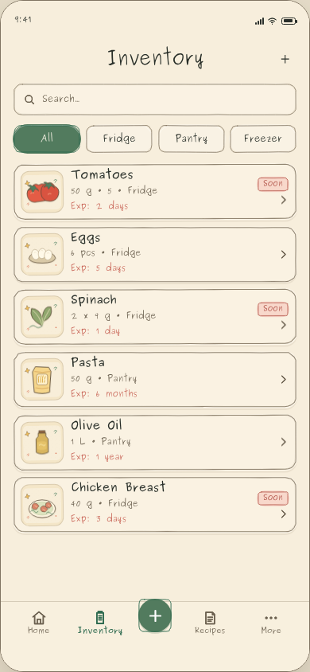
05 · Recipe Suggestions
Viewport: 390×844 pt · 28 elements mapped
Source referenceCurrent HTML render
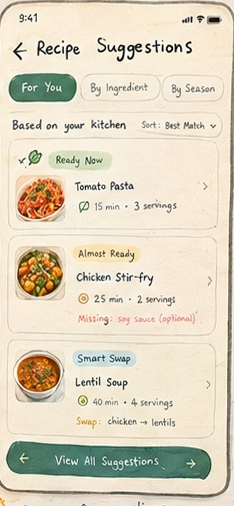
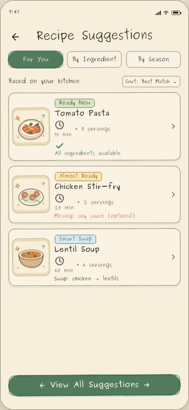
06 · Tomato Pasta detail
Viewport: 390×844 pt · 26 elements mapped
Source referenceCurrent HTML render
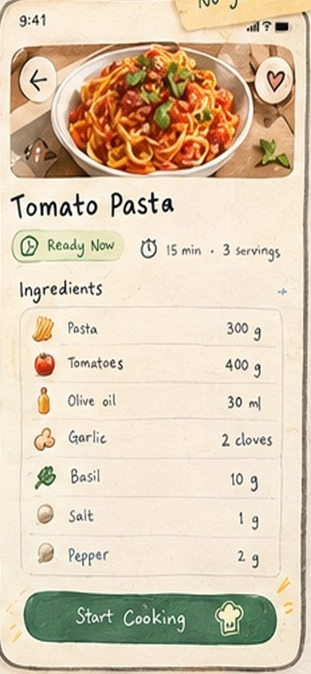
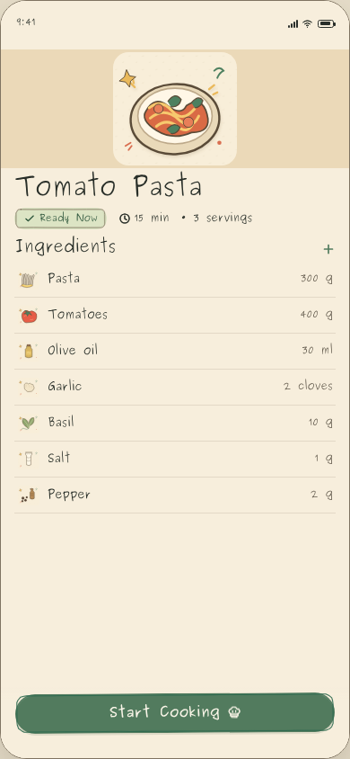
07 · Cooking step
Viewport: 390×844 pt · 18 elements mapped
Source referenceCurrent HTML render
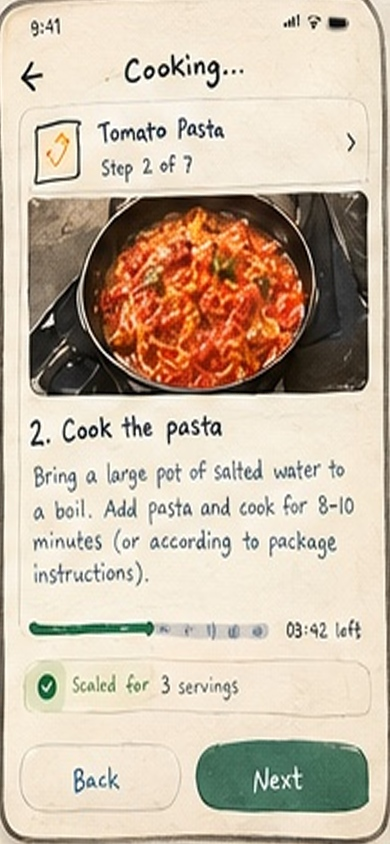
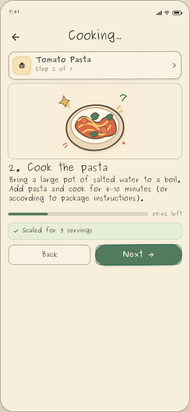
08 · Portion Scaling
Viewport: 390×844 pt · 24 elements mapped
Source referenceCurrent HTML render
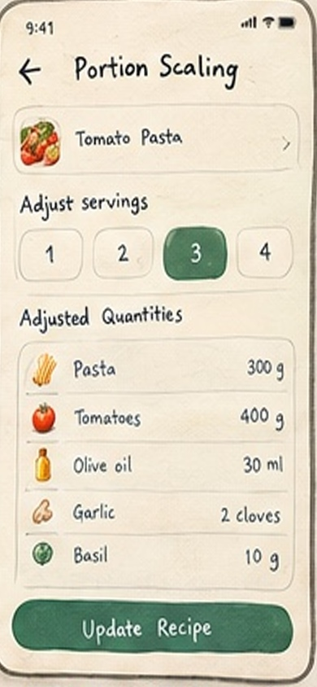
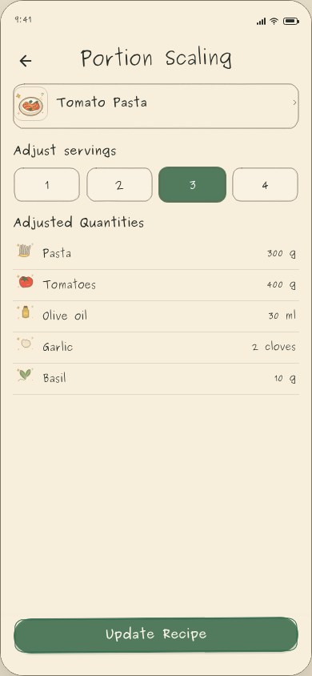
09 · Ingredient Swaps
Viewport: 390×844 pt · 20 elements mapped
Source referenceCurrent HTML render
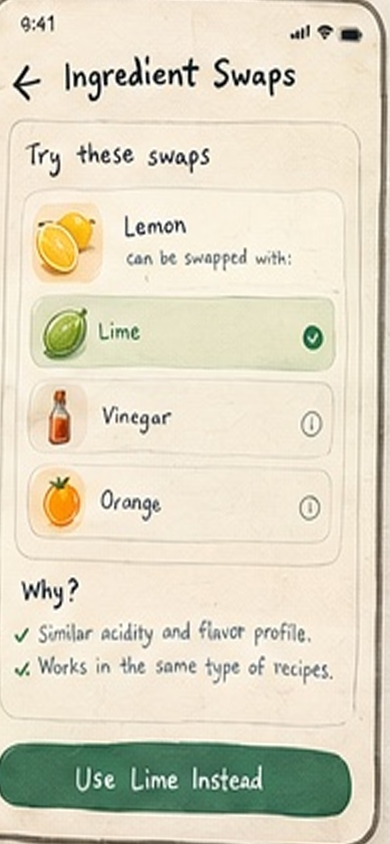
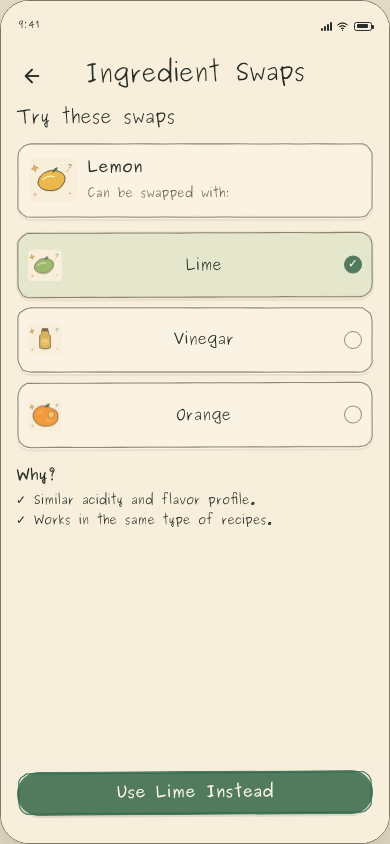
10 · Meal Suggestions
Viewport: 390×844 pt · 28 elements mapped
Source referenceCurrent HTML render
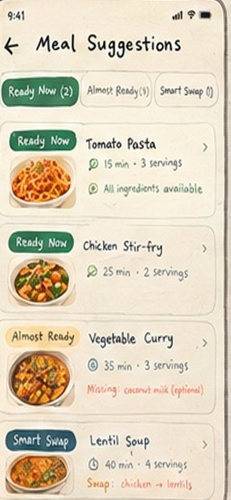
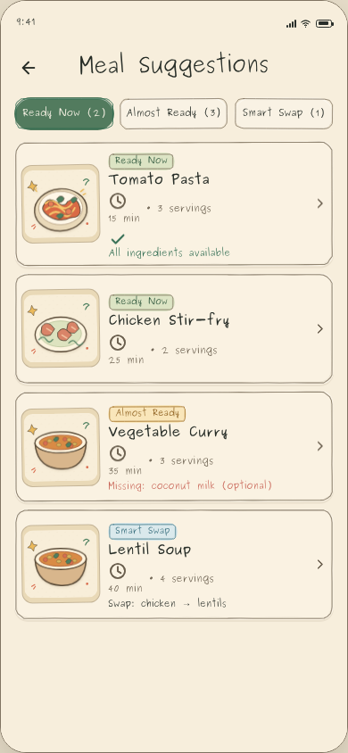
11 · Lentil Soup detail
Viewport: 390×844 pt · 21 elements mapped
Source referenceCurrent HTML render
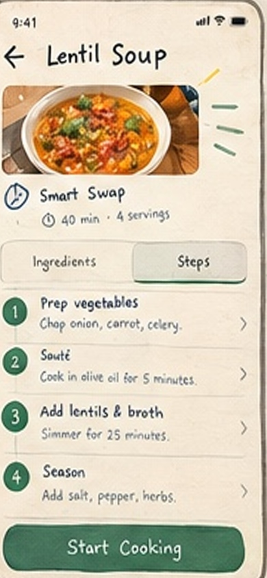
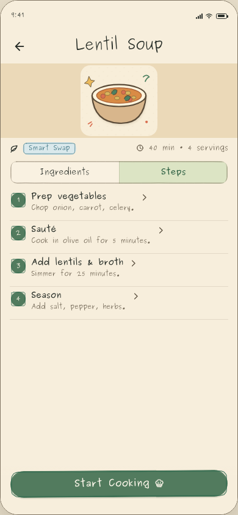
12 · Expiration Priority
Viewport: 390×844 pt · 19 elements mapped
Source referenceCurrent HTML render
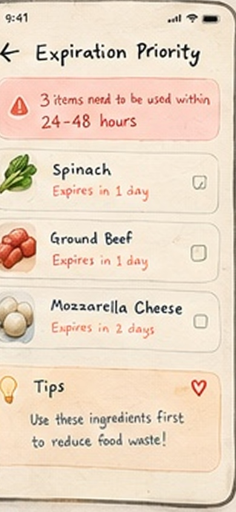
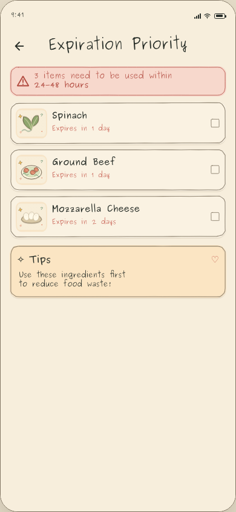
13 · Settings
Viewport: 390×844 pt · 21 elements mapped
Source referenceCurrent HTML render
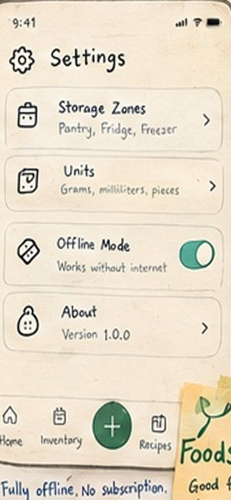
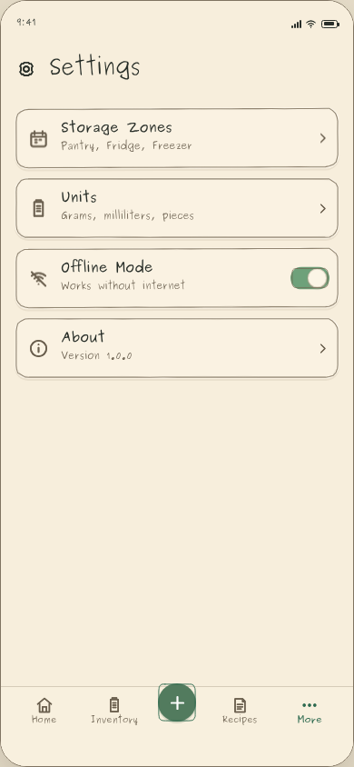
Master files
SCREEN-MEASUREMENT-ATLAS.md · readable screen-by-screen coordinates
SCREEN-COORDINATE-MASTER.json · perspective transform, element and text-run data
SCREEN-TEXT-COORDINATE-ATLAS.md · every text line positioned separately
ELEMENT-OVERLAY-INDEX.md · overlay labels mapped to element IDs
VISUAL-DISCREPANCY-AUDIT.md · screen-by-screen mismatch report